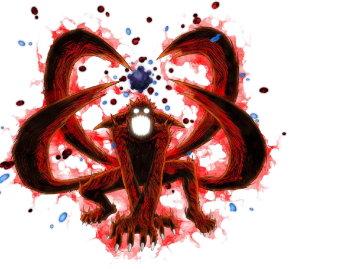

Название:бомба хвостатого
Стихия:Огромный поток чакры

когда человек зол, он превращается в это чудовище ,монстра (другое название кьюби) у этого кьюби есть 9 режимов.(ну или даже 10)
первый режим : человек покрывается огромным количеством чакры, и у него из чакры появляется
хвост и так даллее. Но самые опасные режимы это 4 режим и 5, когда человек уже в ярости у него
появляются эти режимы. в этом режиме все техники и атаки опасны, но самая опасная это бомба
девяти хвостого лиса. это огромный шар, к которому если прикоснуться то ты уже будешь лежать
в могиле мягко говоря.